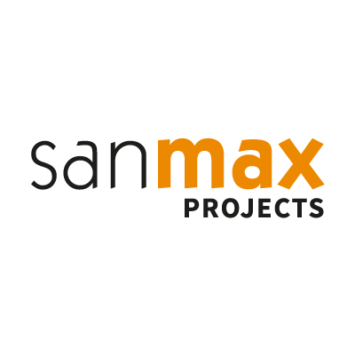
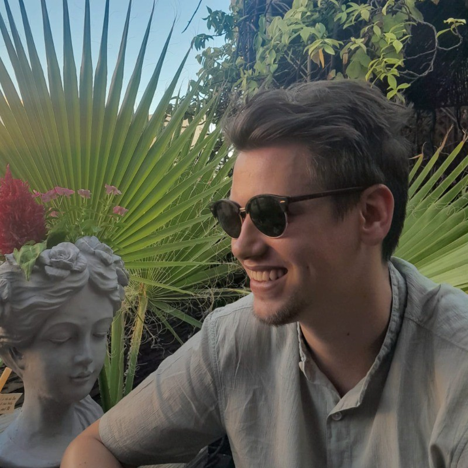
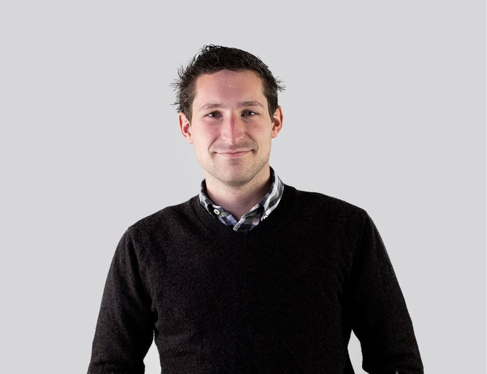

SanMax Projects
Sanmax is méér dan een online webbureau.
Ze zijn een online en offline partner die met je meedenkt en naar de
meest geschikte manier zoekt om jouw merk, product of dienst online
in the picture te zetten. Ze boetseren mee aan de identiteit en de
uitstraling van je bedrijf door middel van webdesign,
webdevelopment, corporate identity, e-mailmarketing, online
agendabeheer, training en nog veel meer.
Ze gaan een samenwerking aan waarbij ze onderling
overleggen, goede afspraken en regelmatige feedback centraal zetten.
Het resultaat? Een oplossing op maat, die zonder problemen kan
uitgebreid worden in de toekomst. Bij Sanmax kan alles...

Wat doen ze?
Logo’s, brochures, flyers, posters of je volledige huisstijl!
Webdesign
Responsive webdesign en webdevelopment op maat!
Apps
Native iOS, Android of Windows apps voor tablets en smartphones!
Online agenda
Online agenda via je website, mobiele apps & zoveel meer
Gwen Claes
Toen Gwen in april 2010 bij sanmax begon als developer had hij
nooit kunnen dromen de kans te krijgen om een deel van het bedrijf
over te nemen. Sinds april 2015 is Gwen zaakvoerder van sanmax
projects, samen met het team tracht hij ieder project tot een goed
einde te brengen zodat iedereen fier kan zijn op het resultaat.
Omdat Gwen zijn hobby eigenlijk werken is blijft er niet
veel vrije tijd over, al tracht hij wel wat meer tijd vrij te
maken om door te brengen met vrienden en familie.
Maarten (mentor)
Maarten begon zijn carrière bij Sanmax Projects in de marketing, maar al snel groeide hij uit tot een onmisbare schakel binnen het bedrijf. Tegenwoordig werkt hij vooral aan de MYA Online Agenda, een online platform dat voornamelijk door dokterspraktijken wordt gebruikt. Als mentor leerde Maarten mij de kneepjes van het vak en begeleidde hij me door veel processen bij Sanmax Projects. Daarnaast beheert hij de MYA Online Agenda, wat zijn veelzijdigheid en waarde binnen het team benadrukt.


Dominique Schoonbrood
Na zijn professionele bachelor Elektronica-ICT in de KHLim besloot
Dominique om zich nog verder bij te scholen. Hij volgde een
opleiding als webdesigner/ontwikkelaar aan het CVO in
Heusden-Zolder om het hele webgebeuren intensiever onder de loep
te nemen. En daar heeft hij zeker geen spijt van. Na deze
opleiding startte hij bij Sanmax als front/back-end developer.
Na
het werk en in het weekend blaast hij graag wat stoom af met
computerspelletjes of pikt hij een filmpje mee. Verder is hij een
grote fan van KRC Genk.
Een sterk en veelzijdig team
Hun team bestaat uit medewerkers die allemaal hun eigen specifieke
kwaliteiten en sterktes hebben. Voor ieder project bekijken ze
welke kwaliteiten nodig zijn om telkens het beste resultaat te
bekomen! Sanmax is een professioneel bedrijf met een veelzijdige
en open aanpak. Binnen één firma kan je een hele communicatie-mix
realiseren. Efficiënt, professioneel en op maat.
Binnen Sanmax zijn er verschillende teams die in hun eigen bubbels
werken. Het programmeerteam richt zich voornamelijk op Sanmax
Projects, terwijl een ander team verantwoordelijk is voor het
beheer en de marketing van de MYA Online Agenda. Ondanks dat het
een kleine groep is, vormen ze samen een krachtig en goed
gecoördineerd team, geleid door één toegewijde zaakvoerder.